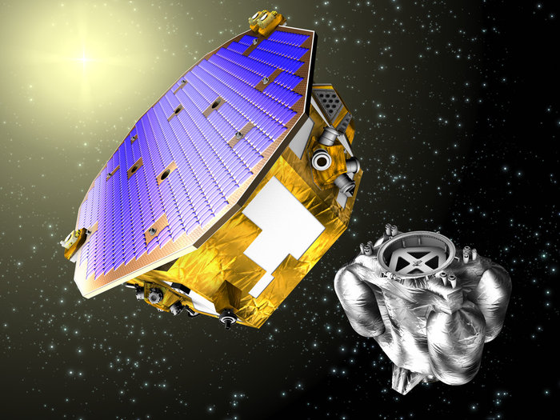

LISA Pathfinder
The LISA Pathfinder is a european space agency space probe and technology demonstrator, it is orbiting high around the earth and sun at in an area known as the lagrange point, this is an area in space where the gravity of the two object (in this case the earth and the sun) are just right to allow the spacecraft to stay in the same position relative to both without having to use a large amount of fuel.The probe was launched at 04:04 GMT on the 3rd of December 2015 on a Vega rocket from korou Space Center in french Guaina and then proceeded on to it's intended orbit so it can perfrom its primary mission.
The main mission of the LISA Pathfinder is to test the technology that could be used to detect gravitational waves, along with testing other equipment.
Information gathered by LISA Pathfinder will be used to help in designing and building the eLISA gravitational wave observatory, a far larger and more elaborate system involing a group of 3 satalites, each a million kilometers appart in a triangle formation which will detect these waves at a much greater accuracy than an single spacecraft could, it is currently planned to launch in 2034 provided everything goes acording to plan.

An artist's inerpretation of LISA Pathfinder.
back to top